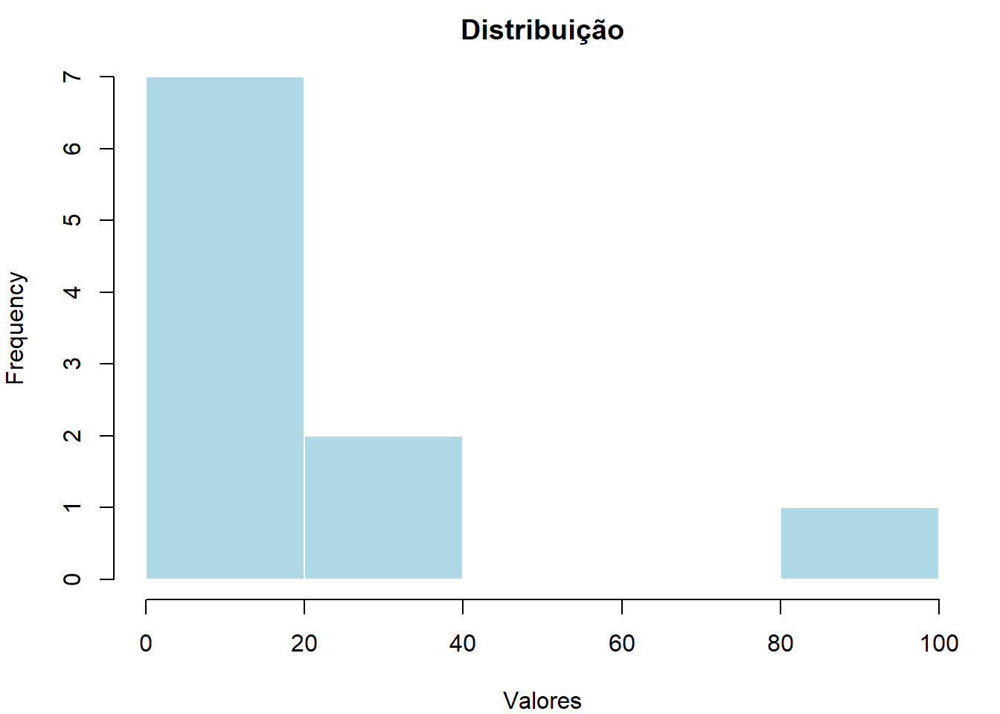
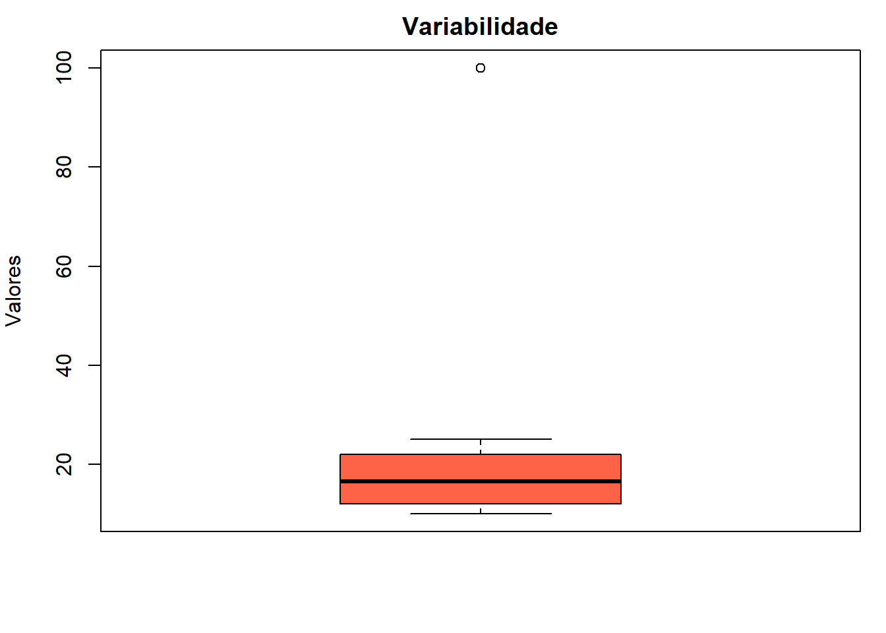

3Análise Exploratória de Dados: Medidas de Tendência Central, de Dispersão e Separatrizes no R
Neste capítulo, abordaremos os fundamentos da Análise Exploratória de Dados (AED). A AED é uma etapa crucial em qualquer fluxo de análise estatística, permitindo compreender a estrutura, a variabilidade e os padrões centrais de um conjunto de dados antes de aplicar modelos mais complexos.
3.1 Medidas de Tendência Central
As medidas de tendência central buscam um valor único que represente o “centro” da distribuição dos dados.
3.1.1 Média Aritmética (\(\bar{x}\))
É a soma de todos os valores dividida pelo número total de observações.
\(\bar{x} = \frac{\sum_{i=1}^{n} x_i}{n}\)
Propriedade: É sensível a valores extremos (outliers).
3.1.2 Mediana (\(Md\))
É o valor que divide o conjunto de dados ordenado em duas partes iguais.
Propriedade: É uma medida robusta, pois não é afetada por outliers.
3.1.3 Moda (\(Mo\))
É o valor que ocorre com maior frequência no conjunto de dados.
3.2 Medidas de Dispersão
As medidas de dispersão indicam o quão afastados os valores estão do centro, descrevendo a variabilidade.
3.2.0.1 Variância (\(s^2\))
Mede o desvio médio quadrático em relação à média.
\(s^2 = \frac{\sum (x_i - \bar{x})^2}{n-1}\)
3.2.1 Desvio Padrão (\(s\))
É a raiz quadrada da variância. Retorna a medida da dispersão para a mesma unidade dos dados originais.
\(s = \sqrt{s^2}\)
3.3 Implementação no R
Abaixo, apresentamos como calcular essas medidas utilizando funções nativas do R.
# Criando um conjunto de dadosdados <-c(10, 12, 12, 13, 15, 18, 20, 22, 25, 100) # O 100 é um outlier# Medidas de tendência centralmedia <-mean(dados); media
[1] 24.7
mediana <-median(dados); mediana
[1] 16.5
# Função para calcular a moda no Rget_moda <-function(v) {uniqv <-unique(v)uniqv[which.max(tabulate(match(v, uniqv)))]}moda <-get_moda(dados); moda
[1] 12
# Medidas de dispersãovariancia <-var(dados); variancia
[1] 723.7889
desvio_padrao <-sd(dados); desvio_padrao
[1] 26.90332
3.4 Visualização de Dados
A visualização é fundamental para interpretar a dispersão e a tendência central simultaneamente.
# Exemplo de dados com um outlierdados <-c(10, 12, 12, 13, 15, 18, 20, 22, 25, 100)par(mar =c(4, 4, 2, 1))hist(dados, main ="Distribuição", col ="lightblue", border ="white", xlab ="Valores")boxplot(dados, main ="Variabilidade", col ="tomato", ylab ="Valores")

(a) Histograma dos Dados

(b) Boxplot dos Dados
Figure 3.1: Análise de Tendência Central e Dispersão
Figura 4: medidas de tendência central e de dispersão.
3.5 Medidas Separatrizes no R
As medidas separatrizes permitem dividir um conjunto de dados ordenado em partes iguais, facilitando a análise da distribuição, a detecção de assimetria e a identificação de valores discrepantes (outliers).
3.5.1 Definições e Conceitos
As medidas separatrizes mais comuns são:
3.5.1.1 Quartis ($Q$)
Dividem os dados em 4 partes iguais (cada uma com 25% dos dados).
$Q_1$ (1º Quartil): 25% dos dados são menores ou iguais a este valor.
$Q_2$ (2º Quartil): É a própria Mediana (50% dos dados).
$Q_3$ (3º Quartil): 75% dos dados são menores ou iguais a este valor.
3.5.1.2 Decis ($D$) e Percentis ($P$)
Decis: Dividem os dados em 10 partes iguais (10%, 20%, …, 90%).
Percentis (ou Centis): Dividem os dados em 100 partes iguais. O Percentil 50 ($P_{50}$) equivale à mediana.
3.5.1.3 Amplitude Interquartílica ($IQR$)
É a diferença entre o terceiro e o primeiro quartil ($IQR = Q_3 - Q_1$). É a base para a construção do Boxplot e uma medida de dispersão robusta.
3.5.2 Implementação no R
No R, a função principal para estas medidas é a quantile().
#| echo: true# Conjunto de dados de exemplovendas <-c(102, 105, 110, 115, 120, 125, 130, 140, 150, 160, 175, 300)# Calculando os Quartisquartis <-quantile(vendas, probs =c(0.25, 0.5, 0.75))print(quartis)
Min. 1st Qu. Median Mean 3rd Qu. Max.
102.0 113.8 127.5 144.3 152.5 300.0
# Calculando o IQRamplitude_iq <-IQR(vendas)print(paste("Amplitude Interquartílica:", amplitude_iq))
[1] "Amplitude Interquartílica: 38.75"
3.5.3 Visualização
3.5.3.1 O Boxplot
O Boxplot (Diagrama de Caixa) é a representação gráfica direta das medidas separatrizes.
#| echo: true#| fig-cap: "Boxplot destacando Quartis e Outliers"boxplot(vendas,main ="Distribuição de Vendas", col ="mediumseagreen", horizontal =TRUE, xlab ="Valores")# Adicionando marcações para os quartisabline(v = quartis, col ="red", lty =2)